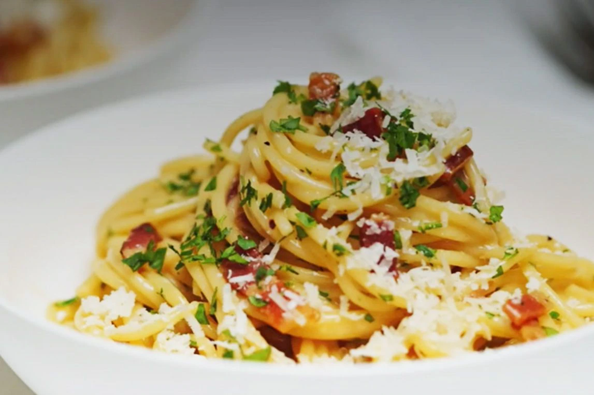

Spaghetti Carbonara

Spaghetti Carbonara
We throw tradition to the wind with our speedy spaghetti carbonara recipe, with some sneaky shortcuts for time-poor cooks. It may taste exactly like the real deal, but this carbonara sauce has some secrets behind its glossy surface, proving some rules are just begging to be broken.
Ingredients
200g sliced Primo Gourmet Selection Pancetta, cut into 1cm-wide strips
2 garlic cloves, finely chopped
3 Coles Australian Free Range Eggs, plus 1 extra yolk
2/3 cup (50g) freshly grated parmesan
2 tbsp chopped flat-leaf parsley leaves
parmesan, extra, to serve
Steps
Cook pasta in a large pan of boiling salted water according to the packet instructions. Meanwhile, heat oil in a frypan over medium heat. Cook pancetta, stirring, for 2-3 minutes until beginning to crisp. Add garlic for 30 seconds, then set pan aside.
Place eggs and extra egg yolk, cream and parmesan in a bowl. Season, then mix gently with a fork. Drain pasta, then return to pan. Quickly add egg and pancetta mixtures and parsley. Toss to combine - the heat from the pasta will cook the egg slightly and form a creamy sauce. Serve immediately with extra parmesan.
Home